Consigne :1. Nomme les images. Relie celles qui riment, qui finissent pareil. 2. Entoure les images qui finissent comme « lion ». 3. Frappe le nom de l’animal et colorie une case pour chaque syllabe.
1
lion
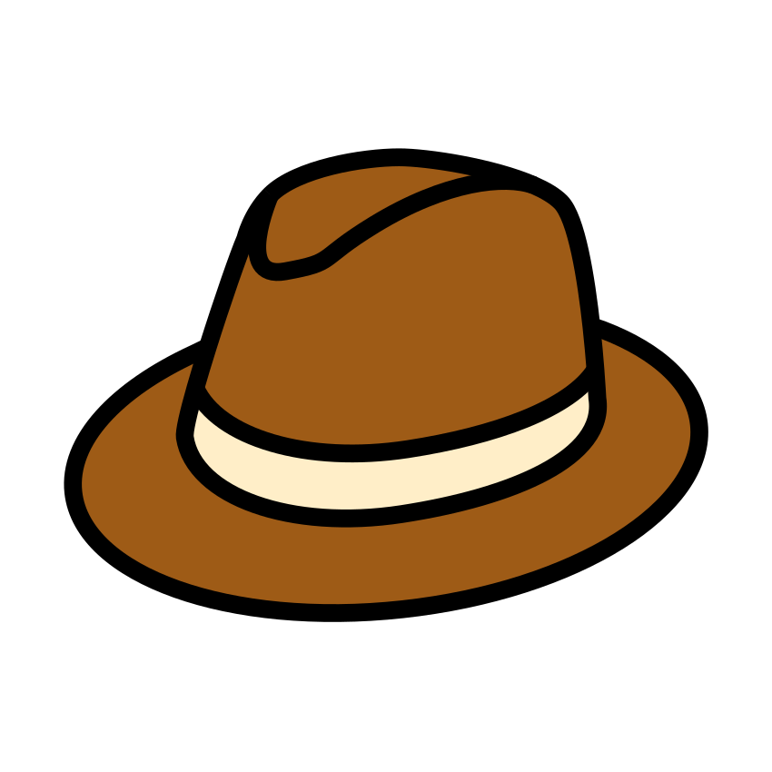
chapeau
souris
girafe
lit
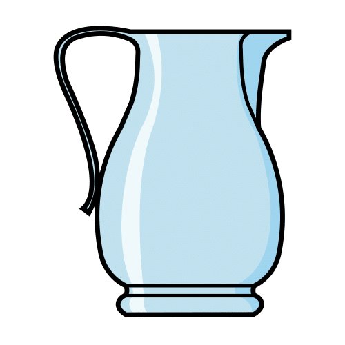
carafe
camion
bateau
2
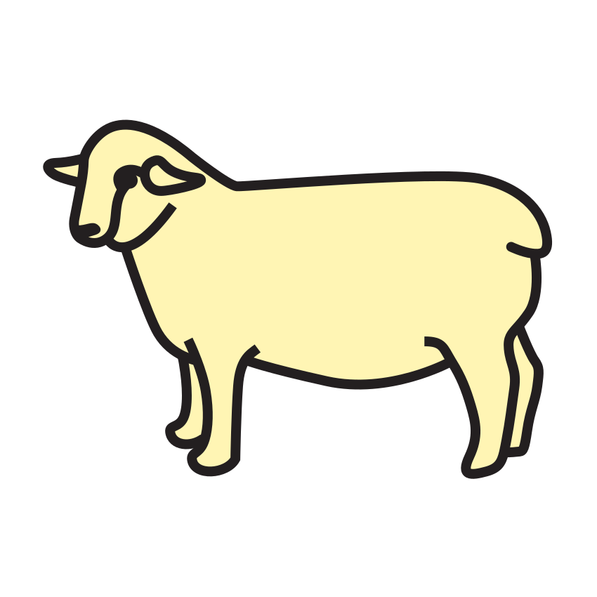
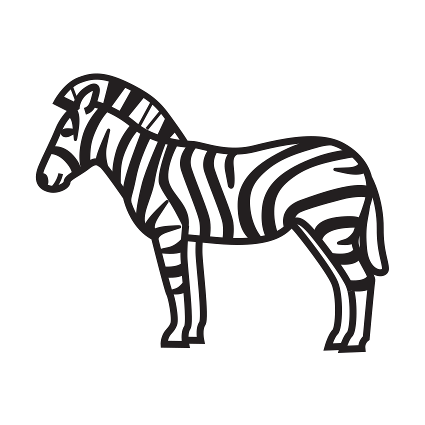
3
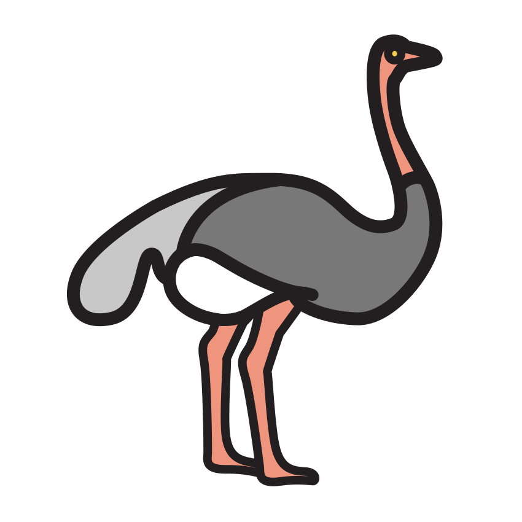
autruche
éléphant
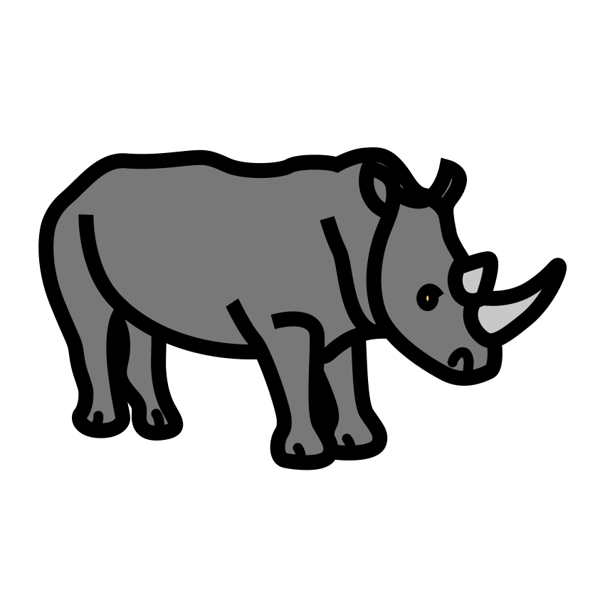
rhinocéros
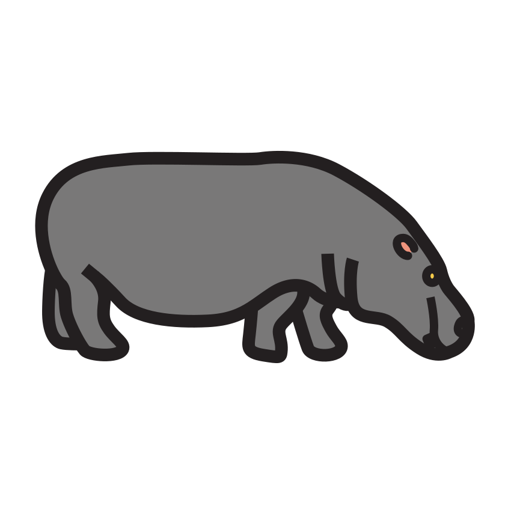
hippopotame
★ Défi : trouve un mot qui rime avec « panier » et dis-le à la maîtresse.
repérer des rimes ; dénombrer les syllabes d’un mot long.A ☐ · EC ☐ · NE ☐
Prénom : Date :
Période 2 · Fiche élève 2
Lettres — capitales et script (éval. 2.4)
Les lettres de la savane
Consigne :1. Relie chaque mot écrit en capitales au même mot écrit en script. 2. Dans le mot HIPPOPOTAME, colorie toutes les voyelles : A, E, I, O, U, Y. 3. Dis le nom de l’animal et écris la voyelle qui manque dans la case.
1
LION
ZÈBRE
GIRAFE
SINGE
girafe
singe
lion
zèbre
2Je colorie les voyelles.
H
I
P
P
O
P
O
T
A
M
E
3J’écris la voyelle qui manque.
LO N
ZB R E
TR T U E
★ Défi : écris ton prénom en capitales et entoure ses voyelles :
associer capitales et script ; reconnaître les voyelles.A ☐ · EC ☐ · NE ☐
Prénom : Date :
Période 2 · Fiche élève 3
Écriture — vers la cursive (éval. 2.5)
La trompe de l’éléphant et le fleuve
Consigne :1. Repasse les boucles de la trompe, puis continue-les jusqu’au bout sans lever ton crayon. 2. Repasse les vagues, puis continue-les : d’abord les ponts, puis les coupes. 3. Continue les grandes boucles du vol de Plume. 4. Regarde le modèle de la maîtresse et écris-le en cursive sur les lignes.
1Les boucles de la trompe.
2Les vagues du fleuve.
3Le vol de Plume au-dessus du désert.
4J’écris en cursive.
modèle écrit par la maîtresse :
tracer boucles, ponts et coupes en continu ; écrire ses premières lettres cursives.A ☐ · EC ☐ · NE ☐
Prénom : Date :
Période 2 · Fiche élève 4
Compréhension — un album (éval. 2.6)
La surprise de Handa
Consigne :1. Relie chaque animal au fruit qu’il a pris dans le panier de Handa. 2. Lequel est venu le premier ? le deuxième ? le troisième ? Écris 1, 2, 3 dans les cases. 3. Qu’y a-t-il dans le panier quand Handa arrive chez Akeyo ? Entoure-le. 4. Entoure le visage de Handa quand elle découvre son panier, puis dis pourquoi.
1
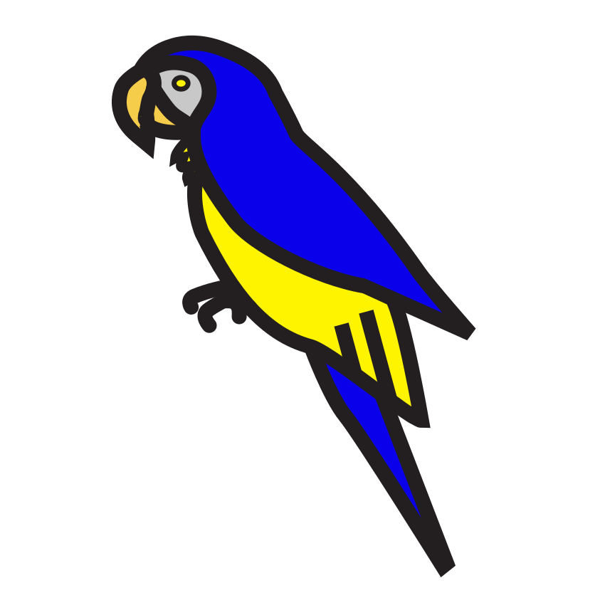
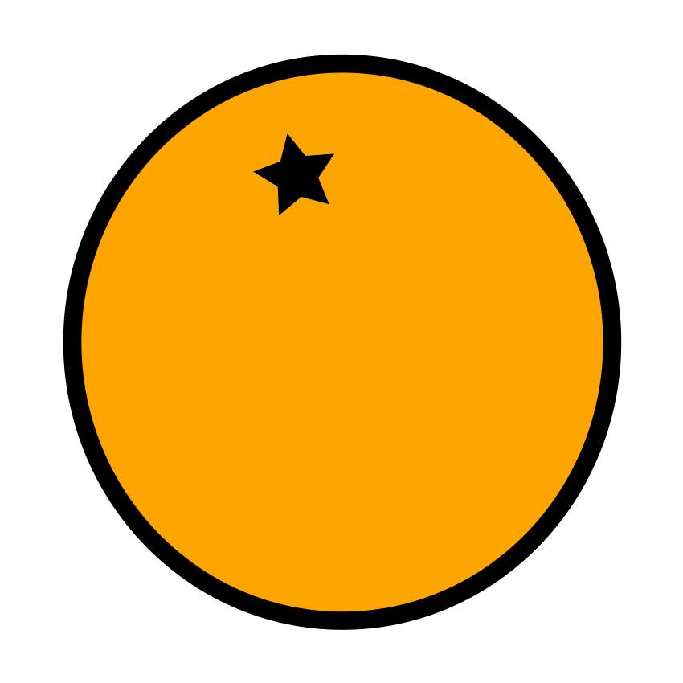
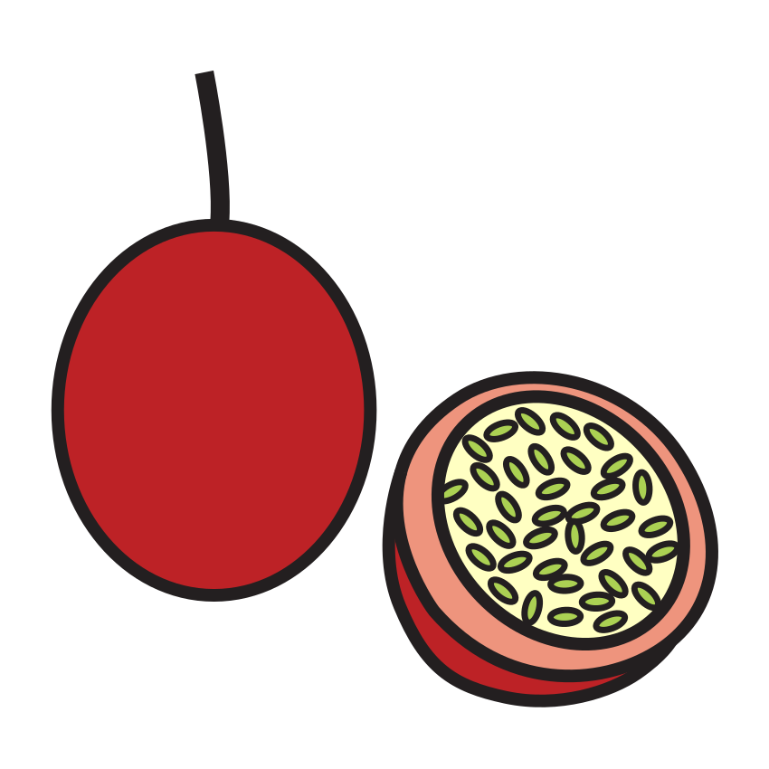
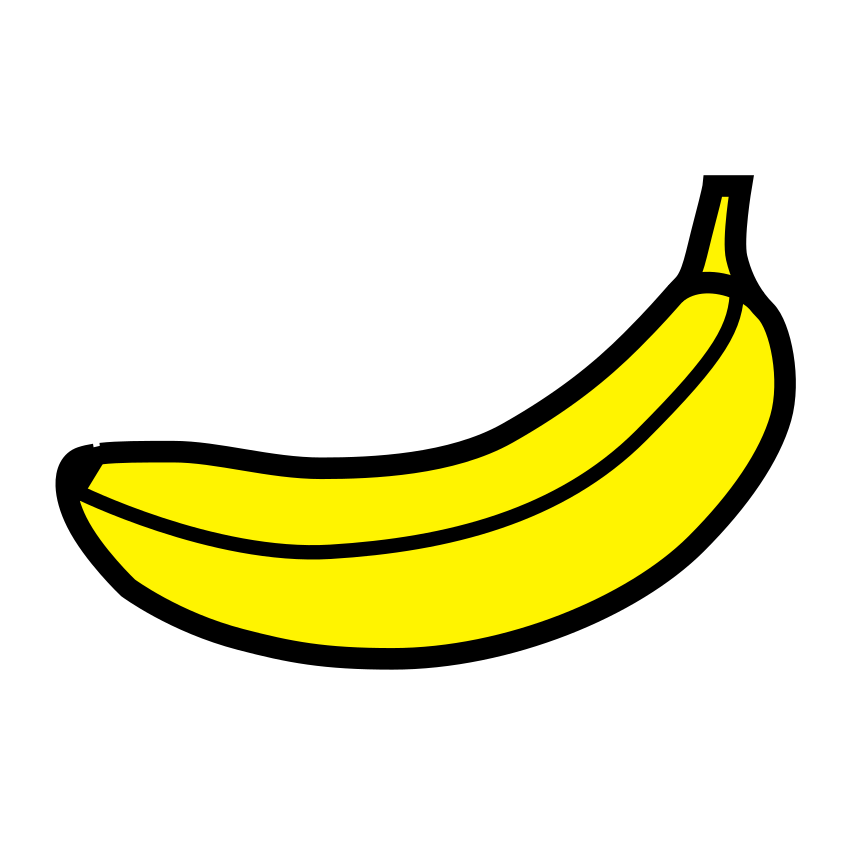
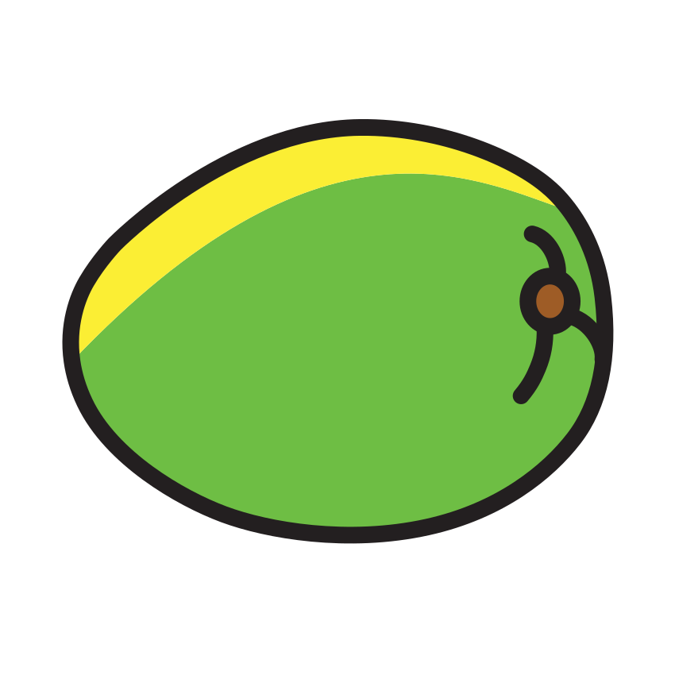
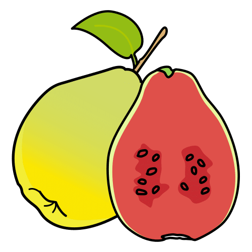
2
3
4
se souvenir des personnages et de l’ordre de l’histoire ; nommer l’émotion d’un personnage.A ☐ · EC ☐ · NE ☐
Prénom : Date :
Période 2 · Fiche élève 5
Mathématiques — quantités jusqu’à 8 (éval. 2.7)
Au marché de Handa
Consigne :1. Compte les fruits de chaque étal et écris le nombre dans la case. 2. Dessine autant de ronds dans la case du milieu, puis écris combien il y en a en tout. 3. Le nombre écrit sur le panier dit combien de mangues il y a déjà dedans. On en ajoute : combien en tout ? Compte à partir du nombre du panier.
1Je compte et j’écris le nombre.
2Les doubles.
pareil
en tout
3Il y a déjà des mangues dans le panier.
5
6
★ Défi : au dos de ta fiche, dessine 8 fruits en faisant deux tas pareils.
dénombrer jusqu’à 8 ; connaître les doubles ; surcompter.A ☐ · EC ☐ · NE ☐
Prénom : Date :
Période 2 · Fiche élève 6
Mathématiques — problèmes (éval. 2.8)
Les fruits du panier
Consigne :1. Il y a 7 bananes dans le panier. Le singe en prend 2. Barre-les, puis écris combien il en reste. 2. Il y a 3 mandarines dans le panier. La chèvre en fait tomber 4 autres. Dessine-les, puis écris combien il y en a en tout. 3. 8 zèbres boivent au point d’eau. 5 zèbres s’en vont. Barre-les et écris combien il en reste.
1Il reste combien de bananes ?
2Combien de mandarines en tout ?
3Combien de zèbres restent au point d’eau ?
★ Défi : invente un problème avec le panier de Handa et raconte-le à ton voisin.
résoudre des problèmes d’ajout et de retrait jusqu’à 8.A ☐ · EC ☐ · NE ☐
Prénom : Date :
Période 2 · Fiche élève 7
Mathématiques — longueurs (éval. 2.9)
Le cou des girafes
Consigne :1. Colorie la bande la plus longue et barre la plus courte. 2. Découpe ta bande témoin (exercice 3). Pose-la sur le cou de chaque girafe : fais une croix dans la case des girafes dont le cou est aussi long que ta bande.
1La plus longue, la plus courte.
A
B
C
D
2Les girafes qui ont le cou aussi long que ma bande.
3Ma bande témoin.
✂ ma bande témoin, à découper
★ Défi : trouve dans la classe un objet aussi long que ta bande témoin et montre-le.
comparer des longueurs directement, puis avec une bande témoin.A ☐ · EC ☐ · NE ☐
Prénom : Date :
Période 2 · Fiche élève 8
Mathématiques — motifs (éval. 2.10)
Les tissus du marché
Consigne :1. Continue le tissu : dessine les formes qui viennent ensuite. 2. Regarde le motif des fruits. Refais-le dessous : un rond pour la banane, une croix pour la mangue. 3. Continue le tissu du marchand. 4. Invente le motif de ton tissu avec deux formes, puis dis sa règle.
1Le tissu de Handa…
2Je refais le motif avec des ronds et des croix.
3Le tissu du marchand…
4Mon tissu.
prolonger un motif ; transcrire un motif avec d’autres éléments.A ☐ · EC ☐ · NE ☐
Prénom : Date :
Période 2 · Fiche élève 9
Le vivant — se déplacer (éval. 2.12)
Comment se déplacent les animaux ?
Consigne :1. Pour chaque animal, fais une croix dans la colonne qui dit comment il se déplace le plus souvent. 2. Colorie en vert les animaux qui ont des écailles ou une carapace, en rouge ceux qui ont des plumes, en marron ceux qui ont des poils.
1
court
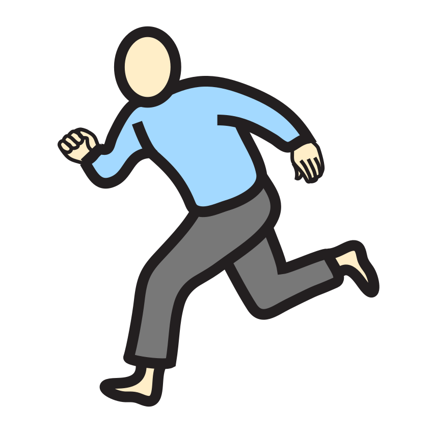
saute
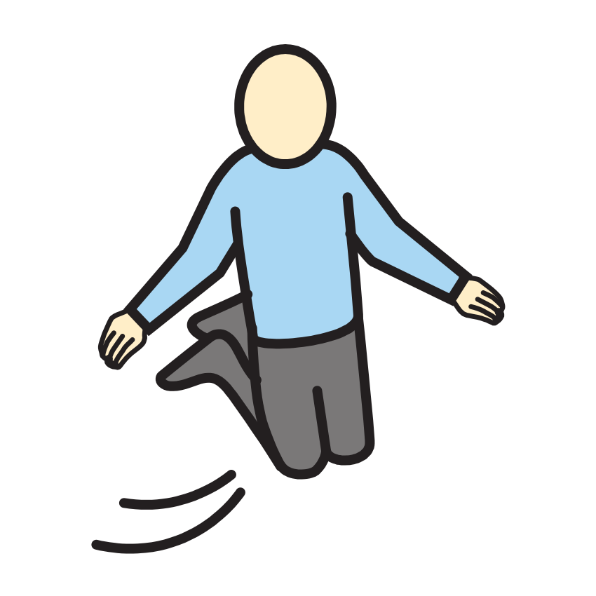
nage
vole
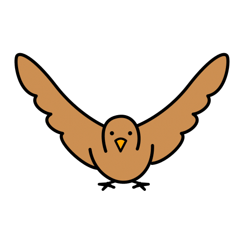
l’autruche
l’hippopotame
le perroquet
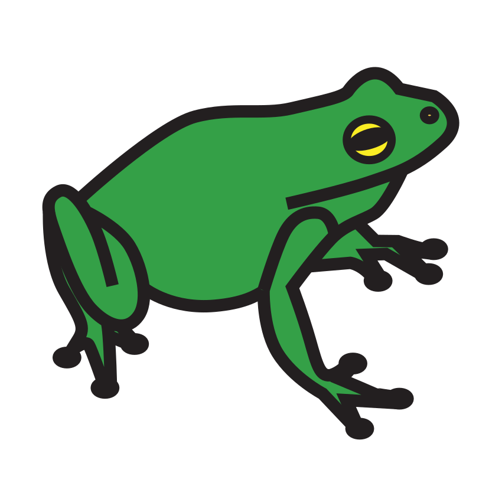
la grenouille
le zèbre
le poisson
2
★ Défi : l’autruche a des ailes mais ne vole pas : comment se déplace-t-elle ? Montre-le avec ton corps.
associer un mode de déplacement à un animal ; classer selon la couverture du corps.A ☐ · EC ☐ · NE ☐
Crédits des images
Les illustrations de ce cahier sont des pictogrammes Mulberry Symbols (Paxtoncrafts Charitable Trust, licence CC BY-SA 4.0, mulberrysymbols.org) et des pictogrammes ARASAAC (auteur : Sergio Palao, propriété du Gouvernement d’Aragon, Espagne, licence CC BY-NC-SA, arasaac.org). Merci à leurs auteurs et autrices.
 lion
lion souris
souris girafe
girafe lit
lit bateau
bateau